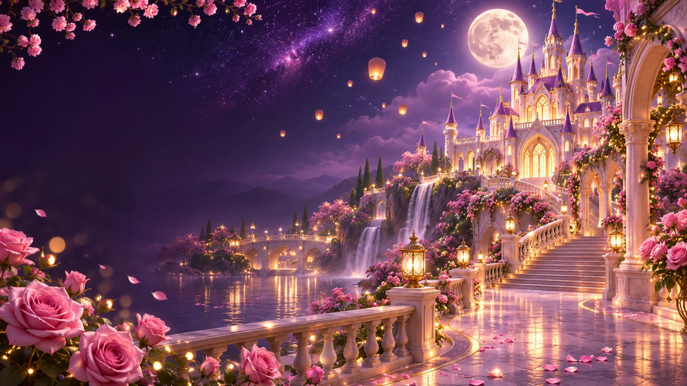

You make my
world brighter.
Some people feel like sunshine. You’re my favourite kind.
A LITTLE SOMETHING, FROM MY HEART TO YOURS
FOR MY GIRL, ON HER SPECIAL DAY
Happy birthday, Roseantic. If I could wrap up all the love I have for you, it would look a little like this.

A DATE I’LL ALWAYS CELEBRATE
01 / THE LITTLE THINGS
You don’t have to do anything extraordinary to be special to me. Being you is more than enough.
Some people feel like sunshine. You’re my favourite kind.
On the wonderful days and the ordinary ones. Especially the ordinary ones.
Whatever you’re reaching for, I want to be the person cheering the loudest.
02 / WORDS FROM MY HEART
I made you this little website because “happy birthday” didn’t feel like quite enough.
This one’s just between us. ♡03 / A LITTLE LOVE TO KEEP
Five little notes, all for you.
Open one. Then another.
If today feels heavy, let this be your little reminder: you are loved, exactly as you are.
04 / ONE WISH, ALL YOURS
Whatever you wish for, I hope this year brings you closer to it.
And I hope I get to be right there, celebrating with you.